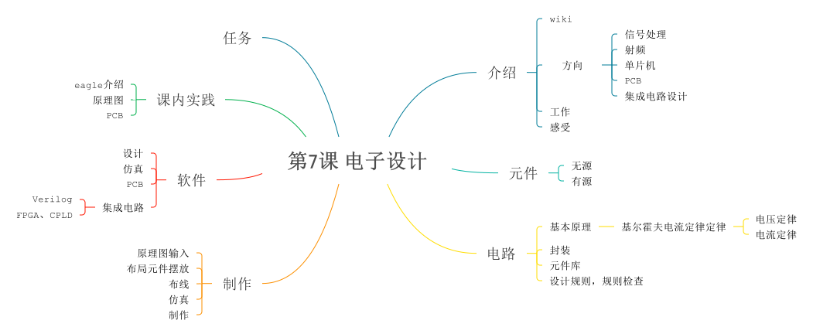

本课程思维导图，点击下载
什么是电子设计
目标
理解什么是电子设计，并通过Eagle软件设计一个属于自己的Arduino
参考资料
“Ayrduino” Single-Sided Arduino Clone
PCB Design Using EAGLE CAD
Single Sided Really Bare Bones Board Arduino in EAGLE
Arduino Single-Sided Serial Board (version 3)
How to use EAGLE
Using EAGLE: Schematic
元件

- wire导线
- switch 开关
- button 按键
- resistor 电阻
- capacitor 电容
- 有极性
- 无极性
- crystal 晶振
- inductor 电感：V = L dI/dt
- Diode 二极管：电流从阳极到阴极
- PN
- Schottky 肖特基
- Zener 齐纳二极管
- LED
- transistor 三极管
- bipolar:collector, emitter, base current gain 双极性
- mosfet: source, drain, gate resistance 金属氧化物半导体场效应晶体管
- Battery 电池
- regulator 稳压器
- op-amp:运算放大器
- microcontroller 微控制器
- sensors 传感器
- actuators
circuits 电路
Kirchoff's laws: sum current at node, voltage around loop = 0
- EDA (Electronic Design Automatic) 电子设计自动化
- EDA 软件
- 123D Circuits
- FritzingFritzing is an open-source hardware initiative that makes electronics accessible as a creative material for anyone. We offer a software tool, a community website and services in the spirit of Processing and Arduino, fostering a creative ecosystem that allows users to document their prototypes, share them with others, teach electronics in a classroom, and layout and manufacture professional pcbs.
- Virtual Breadboard还有与arduino相关的VBB4Arduino
- Eagle:EAGLE, the Easy Applicable Graphical Layout Editor is a powerful PCB design software tailored to meet the needs of professional engineers, makers and those at school!
- DesignSpark
- MultiSim:Multisim是美国国家仪器（NI）有限公司推出的以Windows为基础的仿真工具，适用于板级的模拟/数字电路板的设计工作。它包含了电路原理图的图形输入、电路硬件描述语言输入方式，具有丰富的仿真分析能力。
- KiCad:kicad是一款开源软件，遵守GNU的GPL版权协议，使用起来没有盗版的问题。
- Altium:Altium（前称Protel International Limited）有限公司由Nick Matrin于1985年在塔斯马尼亚岛的霍巴特成立，用来开发基于计算机的软件来辅助进行印制电路板（PCB）设计。
EAGLE学习
assignment 任务
- 设计一个属于自己的arduino电路板，要求：最小系统+至少一个LED指示灯
- 如果学习深入可以采用贴片的封装
- 至少有一个按键和LED（不要忘了限流电阻）
- 对电路进行规制检查，造出来！
- 额外加分项：对电路进行仿真